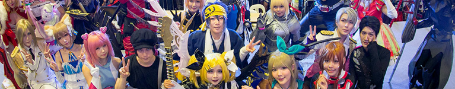

A Trento non è estate senza le Feste Vigiliane. Il centro si riempie di luci, di giochi, di persone e di tradizioni: il Palio dell’Oca, il Tribunale e la Tonca sono solo alcuni degli appuntamenti di cui ormai la città non può più fare a meno.
C’è però un evento speciale che è particolarmente apprezzato dai giovani: la Magica Notte; il sabato sera del 23 giugno, infatti, a Trento sarà festa fino all’alba. E poteva mancare Ludimus, secondo voi? Certo che no!
L’appuntamento si chiama Vigiliane Play, e sarà a tutti gli effetti una piccola fiera del gioco da tavolo e del fumetto.
Per inaugurare quello che speriamo diventi un evento fisso in seno alle Feste Vigiliane, è stato scelto un tema molto interessante. Vigiliane Play, sviluppandosi sul tema “Oltre le Mura” delle Feste Vigiliane, sarà incentrata sugli “Invaders”, ossia sul tema del diverso, dell’estraneo e dell’alieno. In altre parole: su tutto quanto la mente umana ha plasmato per imporre un confine netto tra “Noi” e “Loro”, mettendolo in discussione con il gioco e la fantasia.
La location scelta è il parco delle Albere, gettonatissima per gli eventi per i giovani, casa di Poplar e dove più di recente si è svolto il Dolomiti Pride.
Le attività apriranno alle 18:00, e ci troverete pronti, statene certi! Assieme agli amici della Tana dei Goblin di Trento, gestiremo l’Area Games dell’evento: 15 tavoli e più in un’area di gioco di oltre 70m2, dove potrete provare tutti i migliori giochi da tavolo in circolazione, spiegati da ragazze e ragazzi esperti e appassionati. Vi basterà venire al nostro bancone muniti di un documento d’identità e scegliere il vostro titolo per la serata, et voilà: il gioco è servito!
Non avete in mente nulla di particolare? Non siete certi di quale gioco possa fare più al caso vostro? Lasciatevi consigliare dai nostri sommelier ludici: ne avremo davvero per tutti i palati. Dai party game come “Nome in Codice” o “Dixit”, a grandi classici come “Catan” o “Dominion”, fino ai cinghialoni più cattivi, come “Terra Mystica” o “Specie Dominanti”. Siete una famiglia con pochi minuti a disposizione? Una partitina a “Dobble” non si rifiuta mai. Un gruppo di appassionati di enigmi? Non potrete certo farvi scappare il nostro “Unlock!”. Siete una coppia di nerd con tutta la sera a disposizione per mettere alla prova la propria abilità strategica? “Twilight Struggle” vi terrà la mente impegnata. Siete degli amanti di Lovecraft alla ricerca di oscuri segreti nel parco cittadino? Siete fortunati: troverete quello che cercate entrando ne “Le Case della Follia”.
Venite a trovarci, anche solo per 10 minuti. Vedrete, non ne rimarrete delusi!

Si sa che fumetto e gioco da tavolo vanno a braccetto, e dopotutto: cos’è una fiera del fumetto senza un po’ di sano cosplay? Che siate degli autentici fanatici di personaggi fantastici, o semplicemente incuriositi da questo mondo pittoresco e colorato, farete meglio ad accorrere numerosi, perché Vigiliane Play ospiterà un Cosplay Contest! E presentato nientepopodimeno che dalla premiatissima Giorgia Cosplay!
Attrezzatevi di buona volontà ed infinita fantasia, e salite sul palco delle Albere sfoggiando le vostre mosse migliori! La giuria riserverà un premio speciale al cosplayer che meglio avrà interpretato il tema della fiera (che sia un alieno, un barbaro, o Cthulhu in persona, va benissimo: noi saremo lì a fare il tifo per voi).
Non solo cosplay però, ma tante altre attività partendo da due pilastri della cultura nerd, sia essa su carta o su pellicola: Harry Potter e Star Wars!
Per il mondo del mago dagli occhiali tondi troveremo Aquilæ Tridentum Quidditch, che ci farà provare un’autentica partita al popolare sport su scope volanti (siamo tutti curiosi di sapere come funziona nella “vita reale”), e Piertotum Locomotor, squadra di cosplayer di Harry Potter tra le cui fila troveremo a farci compagnia il bonario Hagrid e la professoressa Minerva McGonagall.
Per quanto riguarda invece l’universo fantascientifico di George Lucas, non poteva mancare la Saber Guild di Trento, uno dei due gruppi italiani dell’associazione internazionale Saber Guild ufficiale riconosciuta dalla Lucasfilm! I maestri e gli apprendisti del tempio di Trento ci diletteranno in combattimenti a colpi di spada laser e, sfoggiando i loro splendidi costumi fedelissimi alla saga, ci daranno qualche consiglio su come familiarizzare con la Forza. Vedrete: non sarà necessario essere dei campioni di scherma per poter iniziare il percorso che da Padawan porterà a sedere nel Consiglio dei Jedi (o sul trono dell’imperatore Sith, se preferite).
Per chi invece volesse rimanere più con i piedi per terra - pur rimanendo nel campo del fantasy - verranno in soccorso gli appassionatissimi di Trentino Fantasy Fest, associazione che organizza manifestazioni a tema storico-fantastico nel territorio della nostra Provincia. Grazie a loro, potremo passeggiare per un accampamento vichingo senza lasciare le Vigiliane Play, e potremo raggiungerli a far festa con i loro vestiti, le loro armi, e la loro simpatica (e burbera) accoglienza!
Ma non solo, altre attività vi attendono presso i numerosi stand: Lupin III, disegnatori di fumetti di fama locale e nazionale, e l’immancabile parte gastronomica!
A partire dalle ore 22 inizierà infine la parte più musicale e “festaiola” della manifestazione, con i mitici GemBoy (questa volta senza l’amata Cristina D’Avena, purtroppo) e - a partire dalle 23.30 - Albere Soundwall, con la collaborazione di Radio Studio Più; sarà a quest’ora che la zona games sarà liberata per dare spazio alla Magica Notte.
Sarà un’occasione per vivere una giornata fantastica, tra costumi colorati e giochi da tavolo, per gli appassionati e i curiosi; venite a trovarci, vi aspettiamo!